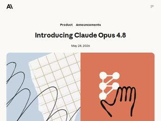
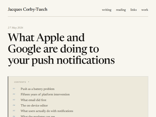

"A rambling comment:I think this is the first time we've had a third minor version bump on a frontier Anthropic model. (I count the 0.5s as major here, because they've been issued non-sequentially and also corresponded to massive capability leaps, eg, Sonnet 3.5, Opus 4.5).So now the Opus 4.5 family has successors 4.6, 4.7, and 4.8, each posting fairly modest claimed gains. My own experience w/ 4.6 and 4.7 are that I don't firmly grasp any capabilities improvements over my memory of 4.5, but it's all so fuzzy that it's truly difficult to tell.Maybe my own tastes are saturated now (it's smarter than me?) and I'll never again perceive model progress. Maybe the incrementalism is such that I'd notice immediately if my 4.7 workflows were redirected now to 4.5.Difficult spot for the labs to be in because, if they have a stronger product, I'd prefer they release it and that I can use it.But as this dynamic continues, the improvements are going to be less and less legible for end-users, who will complain about the churn-without-payoff, even when the payoff may actually be real."
"Today I was a few hours into chasing down a very tricky timing-dependent bug with GPT 5.5 and we were starting to go into circles. I noticed Opus 4.8 had showed up in GitHub Copilot so I switched over and pointed it at my notes so far. Another hour of steady progress and it tracked it down to some missing synchronisation in an upstream library which was occasionally corrupting a linked list. N=1 but worth every one of those rather expensive 15x requests today. 15x... yeah."
"My fav coding benchmark for frontier models is to build a simple RTS game in one file (js/html/css). Claude Code with Opus 4.8 in ultracode mode nailed it, the best result so far:https://bsky.app/profile/senko.net/post/3mmwnrkwboc2vThe prompt was: Create a simple but functional real time strategy (RTS) game similar to old WarCraft, StarCraft or Command & Conquer games. The player should be able to build buildings, create units, gather resources and should uncover the whole map. No AI or multiplayer needed. Use simple but nice-looking graphics. No sound. Implement everything in HTML/CSS/JS, everything in a single file (you can use 3rd-party js or css libraries/frameworks via CDN)."
"I'm really confused by this blog. There seems to be a large portion of the story missing. I can't figure out the correlation between the owner losing their franchise and the rest of the story. Why did they want to steal the sets? If they're really a $400M company (whatever that means), why would they do this over (at most) $200k?I couldn't figure out what is being claimed here. I'm not saying it's not true, I just can't follow the story at all.EDIT: After reading other sources, it seems that the franchise owed $200k to BAM (unrelated) and also made a deal with the Mansell's directly. And it seems like the parent company is saying the unsold sets have been returned but the money is theirs because the store owed them money, while the Mansells are (correctly) saying consignment means they own the sets, not the franchise. BAM crossed into definitively illegal territory when they continued to sell sets after the Mandells asserted they wanted their property back (as confirmed by a "sting" operation).The Reckless Ben stuff is actually pretty interesting: https://youtu.be/14ktgvoH4Mc?si=yhSzpEDo5ut6s8eS&t=880"
"> Bricks & Minifigs CEO Ammon McNeff is a graduate of Brigham Young University. Joshua Johnson and Brandon Best are, by public record and documented account, members of the LDS community. When Reckless Ben's team, following the pattern of obstruction by local law enforcement, looked into the individual officers involved in these incidents, they found that multiple officers were also BYU alumni.I thought “it has to be some kind of corruption here”. And yup it’s the mormon mafia apparently"
"The best part about this is that the CEO insists that the agreement with the previous store owner is null (thus relieving him of the burden of paying 200k), and yet he also insists on keeping the Lego collection set and selling it. It's comical."
"Here's the prompt they used: Classify this claim as of <date>: "<atomic claim>" Output exactly one label: True, Mostly True, Misleading, or False. No explanations, no qualifiers. The claims look like this: https://lenz.io/research/llm-disagreement/data.csvI put that in Datasette Lite to make it easier to explore. Here's an example of a disagreement: https://lite.datasette.io/?csv=https%3A%2F%2Fstatic.simonwil...The claim was "All almonds are grown in the U.S. state of California.". All but one model said False, Opus 4.7 said "misleading".I feel like having "mostly true" and "misleading in there weakens the story, especially given the "no explanations" rule in the prompt.The almond thing is false, but I'd argue that "misleading" might be defensible if you were to accompany it with "the majority of almonds are grown in California, but not all of them".[ Update: OK, this almond thing was a bad example and I regret picking it. Read on for better ones. ]The prompt lacks any kind of rubric to clarify how those terms should be applied.As is so often the case with this kind of study, it's an evaluation of the prompt and harness used by the study in addition to being an evaluation of the underlying models.Update: here's a better example: "Incomplete Egypt visa application forms are among the most common reasons Egyptian visa applications are rejected."The models were split between "true" and "mostly true". Given the "among the most" language either of those answers means effectively the same thing.Update 2: a much better example:"On May 18, 2026, Ukraine carried out a drone attack on Moscow, Russia"The only correct answer to that, if you don't have a search tool, is "this claim is impossible for me to verify". And that wasn't an option.The answers were split between true and false: https://lite.datasette.io/?csv=https%3A%2F%2Fstatic.simonwil..."
""Extraterrestrial life exists somewhere in the universe."GPT-5.4: MisleadingOpus 4.7: MisleadingGemini 3: FALSEGemini 3 (Retrieval): FALSESonar Pro: FALSEIt's a weird fact claim, because the ground truth is "nobody knows for sure" and that's not one of the available options."
"> These aren't benchmark items with public answer keys — they're claims real users submitted for verification to a fact-checking platform.Cool.I wonder if anything of this matters when the authors don't disclose exactly how much of their report was written and made with LLMs in the first place? There even is a "11. Ethics & data use" section, and the research is about LLMs being infallible in some ways, yet the usage of LLMs for the production of this report isn't even mentioned once."
"I love this game so much. One of the reasons I started to make a city builder* is because I don't like where the genre is going.The focus on photorealism in modern city builders took away the apophenia, or "food for imagination" that was a core element since the first SimCity. As a matter of fact, Will Wright used to say that the real simulation runs in the player's minds (or something like that).Sure, there's something great about Cities Skylines that (at least with very powerful hardware) can look and feel like reality. But at the same time the game engine, in order to make this photorealism of terrain elevations with infinite possible shapes of infrastructure, is so complex that the actual simulation is sloppy, and feels to me like a big downgrade from SC3000.Traffic, economics, zoning, crime, pollution. are so much practical to simulate (both in the computer, and in our mind models) in this classic isometric style.* https://microlandia.cityedit: spelling"
"This was one of my favourite games. City simulators took up an enormous amount of my childhood and I still dream about arcologies. When I see a modern development like Brentwood in Canada's BC or some older ones like along the river in Chicago it reminds me of the wonders we can build.As an aside since it's in the article, what are other cultures' irreverent targets? e.g. Anglo-cultures seem to casually joke about disasters like he does here about 9/11. Somewhat diminished by the fact that he's British, not American, but Americans do it too, and the American-British interaction involves this and Irish Car Bombs taken rather lightly. I find that curious. Do the Quebecois joke about Opération Satanique and the French have likewise a thing they make fun of the Quebecois for? Or is this an Anglo-culture thing? Obviously, I principally read in English so this might be specific to my language."
"SC3K had a masterfully executed advisor system that felt both classy and warm. Ditto its music and art.Unfortunately for SC4, they proceeded to make all the advisors 3D-rendered Sims. For SC2K, well:https://www.somethingawful.com/news/simcity-advisors/4/(that was the least offensive page to link; for the canonical experience start at page 1)"
"From last November to March, the court papers say, Mr. Rush asked for, and received, “a significant quantity of foreign currency and tens of millions of dollars in gold bars for work-related expenses.”Obvious plant nobody would be that stupid to store the valuables at home within the first six months after the „acquisition“.——Also the CIA was unable to confirm his discharge with the navy earlier? As if people aren’t properly vetted every time they switch jobs within the agency. (Especially considering his CIA career was on an upward trajectory)I have no clue what Mr. Rush actually did but it was neither of these two things which earned him ire.Maybe he’s a traitor and the gold + foreign money are bribes. If the CIA doesn’t want to explain what he‘s been bribed for the charges make a more sense."
"There's this one guy who's apparently also insider and he and his family earns a lot of money because of market manipulation with his decisions. Maybe FBI should get into him as well?"
"I read a book by a CIA officer. A big part the job is carrying around tons of cash for shady people. It’s understood that if you take the cash for yourself, you go to prison.The ironic thing is the money usually goes missing. It gets given to some VIPs brother, who is supposed to give it to VIP, but doesn’t.The important thing is it not go missing while you are watching it. It can go missing later - just not on your watch."
"The work is very interesting. The title is misleading.A better title would be: "all of human ingredients compressed into 1,800 primitives"There is little to substantively nothing about the actual cooking: preparation methods, proportions, etc.But the idea that tomato goes well with beef the whole world over is very interesting and useful for creating flavors that will go together, perhaps surprisingly. It will be a nice resource in the future."
"Neat.I'm trying to compress recipes into little schematics https://leontrolski.github.io/recipes.html"
"FWIW all of https://publicdomainrecipes.com is available as a single 22MiB file at https://browse.library.kiwix.org/viewer#publicdomainrecipes.... from https://browse.library.kiwix.org and you can submit more recipes at https://github.com/ronaldl29/public-domain-recipes"
"It's cool to see things like this, I wasn't aware of. I made something similar for VR around 6 or 7 years ago with full DJ mixing on real vinyl turntables. I got things built so DJs could play their set from anywhere in the world and have access to their music from their own studio or home etc. Unfortunately i was one guy making this and health issues have sadly put this project on hold indefinitely. It would be a shame to let it die like this and would love others to carry the project further. What would be the best way to share this, i really don't know as i made it using unity engine, all my own assets, scripts etc are made by me, no vibe coding or anything like that.Here's a couple of videos of the project if anybody is interested in carrying this further, please let me know thanks.https://youtu.be/qXeiqlFA7Rg?t=171https://www.youtube.com/watch?v=nub6gKgLt44https://www.youtube.com/watch?v=yWjZUOVbfx4"
"I have been raving for the past 15 minutes. Very cool idea. The chat system and can be improved - It could be nice to "force" more interactions with the other players. Atm everyone just seem to run around and switch dance moves. Maybe you could considering some basic rewarding system ?"
"The GitHub repository is https://github.com/stagas/hallucinate - License is MIT - All contributions are welcome."

"If my phone interrupts me, it should either mean someone genuinely needs my attention right now or it should not be disrupting me at all. That's my notification set up.Apps allowed to receive push notificationsPhone, Messages, Whatsapp, Apple Health, [brand] bank.That concludes the list.There is no reason any other app needs to be able to instantly ping me. Most apps are not notifying you because something matters; they are notifying you because they want your attention.I do not need notifications about streaks, sales, recommendations, delivery updates etc. All that can wait until I choose to open the app. It is not urgent enough to justify interrupting me."
"I feel like this article reads like the author is upset that Apple + Google prevent / control certain types of notifications (read: spam)> Cross-sell, upsell, education and discovery can work on pushPush notifications should only be for transactional notifications. I don't want another inbox for junk."
"I’m constantly amazed how passive people are with things that steal their attentionMy phone is in do not disturb mode 24/7. If your app notifies me about something pointless, it gets deleted and I start using your website insteadI have a mail rule that moves any email with the word “unsubscribe” out of the inbox into its own tagged area. Every few days, I go in and unsubscribe to everything that’s arrived.Whenever a retail point of sale worker asks for my details or phone number or asks me to sign up to their club, I ask if there’s a discount. Because if there’s no discount - they get no details. It’s a simple exchange; offer to pay a fair price for my details and I’ll consider it. But so far my time and details are worth more than any retailer has offered to pay."
"I used to teach high school math. There was a big push for doing everything digitally. And admittedly, for some topics the use of technology in the classroom or at home can really be a benefit, for instance visualizations or interactive exercises. But having a digital device in class was the number one cause of distraction every time.For a lot of things, good old blackboards are just fine as are pen + paper exercises. Maybe even for most high school math. That was frowned upon though by the higher ranks. If I was evaluated as a teacher and didn't include some iPad shenanigans in the class that I was getting audited for, I would have been in trouble. How behind the times!I got along really well with most of my teenage students, it was a lot of fun interacting with them. But the politics behind it all got too annoying. Also, you're under very tight control on what you teach and how, that was super annoying. So I stopped teaching a few years ago and never looked back."
">“We now observe preparation gaps so severe that instructors must reteach middle-school mathematics while simultaneously teaching the material students need for sciences, engineering, economics, and other quantitatively demanding fields,” they warned.i dont understand why the teachers would go out of their way to reteach middle-school math.i teach. my courses have prerequisites. if a student somehow makes it into my class without a passing-grade grasp of the prerequisites, i will point them in the right direction to get caught up, but i am not spending any class time on it. its not fair to the other students."
"This doesn't surprise me at all. From what I can tell, California's education system has moved from "equality" (which I would define as providing similar opportunities to all the kids) to focusing on "equity" (which I think they define as dictating the same outcome for all kids).To get an idea of how off the rails this has gotten, go read up on their statements trying to justify banning high school calculus. They explicitly (in the abstract / introduction of their plan) reject the idea that some kids are more talented at some things than other kids, so if you can compute a derivative by 12th grade, it's due to racial discrimination benefiting you or something. On a related note, instead of writing some Rust code, today, I think I'll go paint a Banksy or something after I finish my coffee.That plan caused a lot of uproar and was blocked before being implemented.Anecdotally, when I asked our local public school for a copy of the curriculum, the teacher said they just teach common core. If you go to the common core website, somewhere towards the top it makes it clear that it is not a curriculum, and just meant to be a lower bar that gets supplemented.Personally, I think all funding in California education (other than terminal levels like 4 year bachelors and up) should be a function of the percentage of students that succeed at the next step.If a local district starts losing funding, then it would have to close / shrink schools, and people from outside the educational system would be allowed to establish independent (secular) charter schools within the district.Those schools would also not be paid unless the students do well in the next phase of their education. This solves the problem of trying to use this as a curriculum back door for climate denial and Islamophobia (or whatever the red states are pushing)."
"I started experimenting with meshtastic in December last year, but so far it has been a really quiet network, so I'm not seeing the congestion problems the author highlights. According to meshmap there should be a node ~2 miles from my house but I don't reliably see it. I don't see the next closest at 4.3 miles either. For some reason I saw the next furthest (~8.4 miles) for a few days, but it has since disappeared. Since Christmas I've seen 583 nodes from mine - none reliably.My node is a solar powered tree hanger hanging maybe 25 ft above the ground, and I'm in southeast michigan with a typical ~30 minute commute into the suburban cities.I really liked this article but in the end it reinforced my belief in meshtastic - I don't need a computer connected to my node and I'm not paying for any meshcore features. I just wish there were more fixed nodes out there to extend the network."
"IMHO this article misses a couple really important points.First, if the mesh can use Internet or other transports then it will, and it will be built out in a way where these become a necessity. If all you want is a silly new way to text your friends, then something like reticulum will be ok. But if you want a serious solution for emergency response and free communication -- free as in "no one can stop me or control what is said no matter what" then building something independent from scratch is critically important.Second, the author also misses an important piece of functionality of meshcore: If I lose power, the mesh still works.This is hugely important for emergency preparedness and disaster recovery. Especially in places prone to any form of natural disaster.It's certainly the early days, and it's clear that there's a long way to go, but I really feel that these fully decentralized solar powered networks are hugely important as a simple alternative to the corporate behemoth the internet has become."
"I’ve spent my entire career in telco and networking and loved the rise of Wi-Fi (which we used spectacularly over long distances when the spectrum was clear to show off my mates in 3G/microwave backhaul), and have been keeping up with LoRA and related stuff (got a few HelTec boards), but all the recent meshtastic/core/etc. stuff feels a bit like the early wardriving community (and CB radio): fun, full of ideas, but without enough structure (or mass appeal) to take off.I do wish we had a proper, working emergency meshing standard, though. An international one, too."
Claude Opus 4.8
"A rambling comment:I think this is the first time we've had a third minor version bump on a frontier Anthropic model. (I count the 0.5s as major here, because they've been issued non-sequentially and also corresponded to massive capability leaps, eg, Sonnet 3.5, Opus 4.5).So now the Opus 4.5 family has successors 4.6, 4.7, and 4.8, each posting fairly modest claimed gains. My own experience w/ 4.6 and 4.7 are that I don't firmly grasp any capabilities improvements over my memory of 4.5, but it's all so fuzzy that it's truly difficult to tell.Maybe my own tastes are saturated now (it's smarter than me?) and I'll never again perceive model progress. Maybe the incrementalism is such that I'd notice immediately if my 4.7 workflows were redirected now to 4.5.Difficult spot for the labs to be in because, if they have a stronger product, I'd prefer they release it and that I can use it.But as this dynamic continues, the improvements are going to be less and less legible for end-users, who will complain about the churn-without-payoff, even when the payoff may actually be real."
"Today I was a few hours into chasing down a very tricky timing-dependent bug with GPT 5.5 and we were starting to go into circles. I noticed Opus 4.8 had showed up in GitHub Copilot so I switched over and pointed it at my notes so far. Another hour of steady progress and it tracked it down to some missing synchronisation in an upstream library which was occasionally corrupting a linked list. N=1 but worth every one of those rather expensive 15x requests today. 15x... yeah."
"My fav coding benchmark for frontier models is to build a simple RTS game in one file (js/html/css). Claude Code with Opus 4.8 in ultracode mode nailed it, the best result so far:https://bsky.app/profile/senko.net/post/3mmwnrkwboc2vThe prompt was: Create a simple but functional real time strategy (RTS) game similar to old WarCraft, StarCraft or Command & Conquer games. The player should be able to build buildings, create units, gather resources and should uncover the whole map. No AI or multiplayer needed. Use simple but nice-looking graphics. No sound. Implement everything in HTML/CSS/JS, everything in a single file (you can use 3rd-party js or css libraries/frameworks via CDN)."